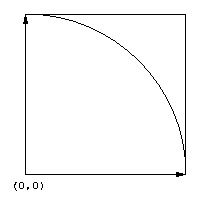

Pour approcher la valeur de PI, nous allons tirer au hasard un grand nombre de points à l'intérieur du carré. La probabilité qu'un point soit à l'intérieur du quart de cercle est :
p = Surface du quart de cercle / Surface du carré
soit:
par simplification, sachant que le rayon du cercle et la longueur du côté du carré valent 1.
Nous tirons donc un grand nombre de points et nous compterons ceux qui
se trouvent à l'intérieur du quart de cercle. Ces deux valeurs
sont notées respectivement N et I. On approchera donc la valeur
réelle de p comme étant le quotient p' = I
/ N.
La valeur approchée de PI sera donc :
PI = 4 x p'
Le principe du calcul n'est valable que si le nombre de points tirés est suffisamment élevé (théoréme de Bernouilli: on sait que dans une série d'épreuves indépendantes, la fréquence relative de l'évènement A converge en probabilité vers P(A) quand le nombre d'épreuves croit indéfiniment). On va donc faire exécuter ce calcul par un grand nombre agents. La valeur approchée de PI sera obtenue par la moyenne des résultats calculés.
{kind=link}